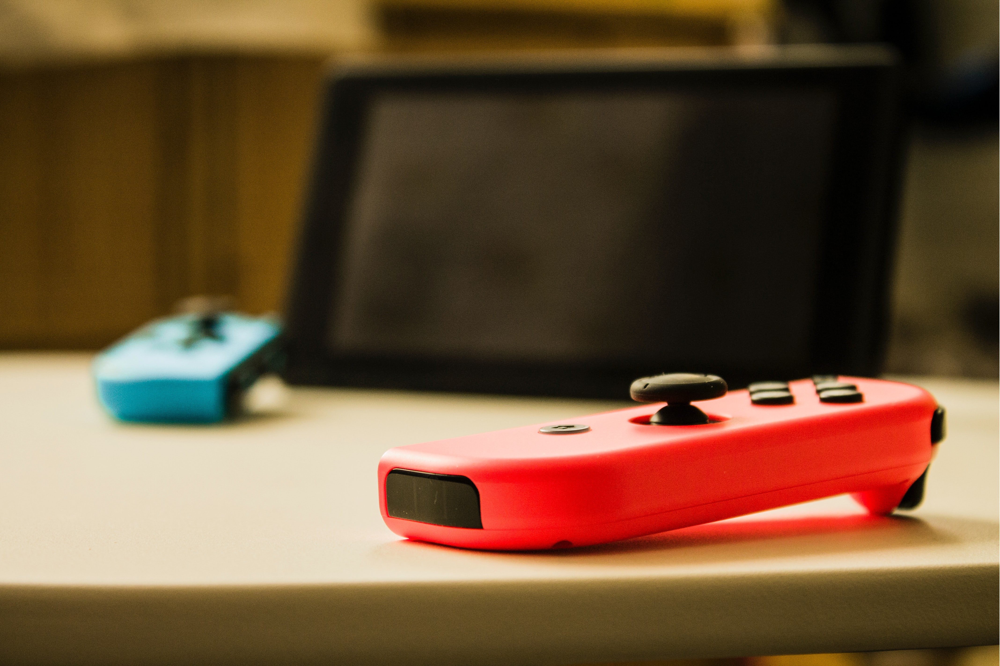

모바일 게임 휴대 전화, 피디에이, 포터블 미디어 플레이어 등의휴대용 기기를 통해즐길 수 있는 비디오 게임의 일종으로, 휴대 전화로 즐길 수 있는 게임을 두루 이르는 말이다. 그러나 플레이스테이션 포터블이나 닌텐도 디에스 따위로 즐기는 핸드헬드 게임은 모바일 게임의 범주에 포함되지 않는다.
2000년대 초에는 컴투스에 이어 게임빌이 탄생한후 이동통신사 중심으로 게임 서비스가 이뤄졌다. 모바일게임을 별도 구매해 플레이하는 방식이었다. 다운로드 할 때 별도 정보이용료와 패킷요금이 부가됐다. 지금과는 달리 최초 다운로드 이후 업데이트와 같은 서비스 관리 개념이 존재하지 않았다.